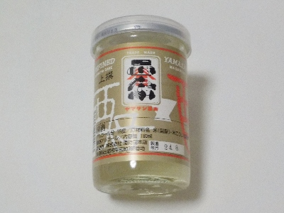
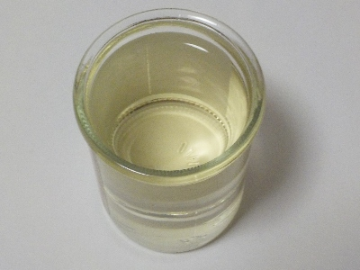
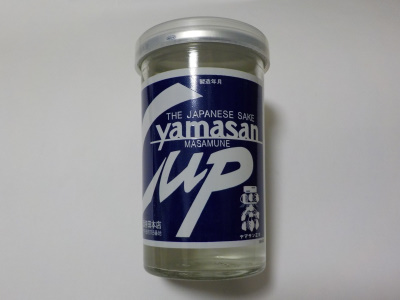
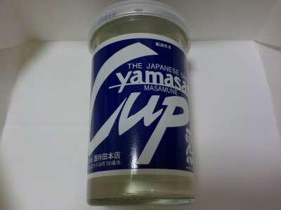
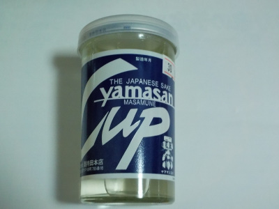

酒持田本店のヤマサン正宗（上撰）。
2024/09/30

さらりとした日本酒ですね。アルコールが15度なんですが、あまり度数を感じませんでした。
飲みやすいので、冷やして飲んだら沢山飲みそうです。

お酒の色が黄色くて濃い感じなんですが、あっさり味です。
島根県平田市平田町785
2024/09/30

さらりとした日本酒ですね。アルコールが15度なんですが、あまり度数を感じませんでした。
飲みやすいので、冷やして飲んだら沢山飲みそうです。

お酒の色が黄色くて濃い感じなんですが、あっさり味です。
2022/02/04

このお酒は濃い味なイメージがあったんですが、私の味覚が変わったのか今日は「ちょっと濃い味」でした。
丁度いいです。
次は温めて飲もうかな。
2021/02/19

久しぶりに地酒を買いました。
近頃は大手のお手頃価格の日本酒をよく飲んでいました。
上手に説明出来ないですけど、地酒はなんか味が違いますね。クセがちょっと強いのかな？
2018/11/07
ピリッと感のある辛口のお酒ですが、とっても甘い味がしました。

こうゆうのは辛口？甘口？どっちでしょうね。
濃い味の日本酒でした。
お酒が濃いと中和するために食べ物が欲しくなりますね。
島根県平田市平田町785
酒持田本店
木綿街道にある酒屋さんです。木綿街道でイベントがあるとお店に寄ります。お酒はスーパーでも買えたりします。